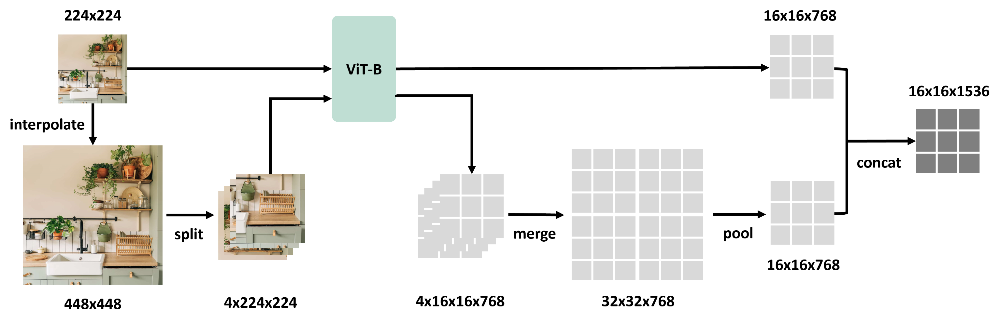
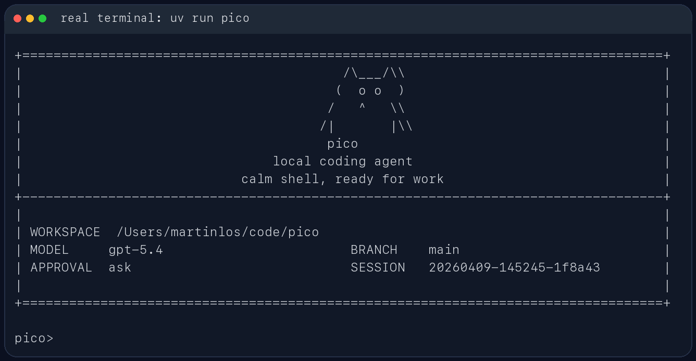

多模态大模型
Mini-LLaVA 训练与推理框架
独立实现 / 工程实践
2026.06
基于 CLIP 视觉编码器、Projector、Qwen1.5 语言模型与 LoRA，整理从 MLLM 学习路线到 Mini-LLaVA 模块化训练、推理和测试的实践链路。
查看详情
我关注从论文理解到可运行工程的完整链路：模型结构拆解、数据与训练流程设计、评测协议、 最小可复现实验和代码质量控制。当前项目以学习型研究工程为主，强调边界清晰、证据可追踪、 不夸大未完成的训练结果。
筛选自当前工作区中最适合公开展示的工程与研究型项目。

多模态大模型
独立实现 / 工程实践
2026.06
基于 CLIP 视觉编码器、Projector、Qwen1.5 语言模型与 LoRA，整理从 MLLM 学习路线到 Mini-LLaVA 模块化训练、推理和测试的实践链路。
LLM 训练设计
模型路线 / 数据与评测设计
2026.06
设计 1.3B 参数中文角色聊天模型的阶段计划、3B token 数据配比、Tokenizer 约束、 SFT/DPO 数据规范和评测隔离规则。

Agent 工程
代码阅读 / 最小实现 / 测试
2026.06
围绕 Pico 风格 Agent，复现从用户请求、提示构造、工具调用、状态更新到 trace/report 产物的最小闭环，并补充测试与基准记录。
这些内容更适合作为研究积累，而不是单独包装成项目经历。
整理 BLIP-2、LLaVA、InstructBLIP、POPE 等论文的模型结构、数据协议、指标和复现风险。
记录 DDPM、DDIM、ControlNet 的核心方法、评估边界和分层 smoke / reproduction 计划。